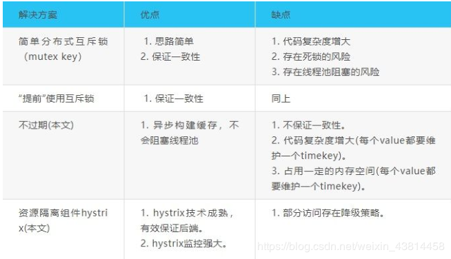

原文连接:https://www.cnblogs.com/a609251438/p/11930331.html
一：前言
设计一个缓存系统，不得不要考虑的问题就是：缓存穿透、缓存击穿与失效时的雪崩效应。
二：缓存穿透
缓存穿透是指查询一个一定不存在的数据，由于缓存是不命中时被动写的，并且出于容错考虑，如果从存储层查不到数据则不写入缓存，这将导致这个不存在的数据每次请求都要到存储层去查询，失去了缓存的意义。在流量大时，可能DB就挂掉了，要是有人利用不存在的key频繁攻击我们的应用，这就是漏洞。
三：解决方案
有很多种方法可以有效地解决缓存穿透问题，最常见的则是采用布隆过滤器，将所有可能存在的数据哈希到一个足够大的bitmap中，一个一定不存在的数据会被 这个bitmap拦截掉，从而避免了对底层存储系统的查询压力。另外也有一个更为简单粗暴的方法（我们采用的就是这种），如果一个查询返回的数据为空（不管是数 据不存在，还是系统故障），我们仍然把这个空结果进行缓存，但它的过期时间会很短，最长不超过五分钟。
四：缓存雪崩
缓存雪崩是指在我们设置缓存时采用了相同的过期时间，导致缓存在某一时刻同时失效，请求全部转发到DB，DB瞬时压力过重雪崩。
五：解决方案
缓存失效时的雪崩效应对底层系统的冲击非常可怕。大多数系统设计者考虑用加锁或者队列的方式保证缓存的单线 程（进程）写，从而避免失效时大量的并发请求落到底层存储系统上。这里分享一个简单方案就时讲缓存失效时间分散开，比如我们可以在原有的失效时间基础上增加一个随机值，比如1-5分钟随机，这样每一个缓存的过期时间的重复率就会降低，就很难引发集体失效的事件。
六：缓存击穿
对于一些设置了过期时间的key，如果这些key可能会在某些时间点被超高并发地访问，是一种非常“热点”的数据。这个时候，需要考虑一个问题：缓存被“击穿”的问题，这个和缓存雪崩的区别在于这里针对某一key缓存，前者则是很多key。
缓存在某个时间点过期的时候，恰好在这个时间点对这个Key有大量的并发请求过来，这些请求发现缓存过期一般都会从后端DB加载数据并回设到缓存，这个时候大并发的请求可能会瞬间把后端DB压垮。
七：解决方案
1、使用互斥锁(mutex key)
业界比较常用的做法，是使用mutex。简单地来说，就是在缓存失效的时候（判断拿出来的值为空），不是立即去load db，而是先使用缓存工具的某些带成功操作返回值的操作（比如Redis的SETNX或者Memcache的ADD）去set一个mutex key，当操作返回成功时，再进行load db的操作并回设缓存；否则，就重试整个get缓存的方法。
SETNX，是「SET if Not eXists」的缩写，也就是只有不存在的时候才设置，可以利用它来实现锁的效果。在redis2.6.1之前版本未实现setnx的过期时间，所以这里给出两种版本代码参考：
1 //2.6.1前单机版本锁
2 String get(String key) {
3 String value = redis.get(key);
4 if (value == null) {
5 if (redis.setnx(key_mutex, "1")) {
6 // 3 min timeout to avoid mutex holder crash
7 redis.expire(key_mutex, 3 * 60)
8 value = db.get(key);
9 redis.set(key, value);
10 redis.delete(key_mutex);
11 } else {
12 //其他线程休息50毫秒后重试
13 Thread.sleep(50);
14 get(key);
15 }
16 }
17 }
最新版本代码：
1 public String get(key) {
2 String value = redis.get(key);
3 if (value == null) { //代表缓存值过期
4 //设置3min的超时，防止del操作失败的时候，下次缓存过期一直不能load db
5 if (redis.setnx(key_mutex, 1, 3 * 60) == 1) { //代表设置成功
6 value = db.get(key);
7 redis.set(key, value, expire_secs);
8 redis.del(key_mutex);
9 } else { //这个时候代表同时候的其他线程已经load db并回设到缓存了，这时候重试获取缓存值即可
10 sleep(50);
11 get(key); //重试
12 }
13 } else {
14 return value;
15 }
16 }
memcache代码
1 if (memcache.get(key) == null) {
2 // 3 min timeout to avoid mutex holder crash
3 if (memcache.add(key_mutex, 3 * 60 * 1000) == true) {
4 value = db.get(key);
5 memcache.set(key, value);
6 memcache.delete(key_mutex);
7 } else {
8 sleep(50);
9 retry();
10 }
11 }
2、"提前"使用互斥锁(mutex key)：
在value内部设置1个超时值(timeout1), timeout1比实际的memcache timeout(timeout2)小。当从cache读取到timeout1发现它已经过期时候，马上延长timeout1并重新设置到cache。然后再从数据库加载数据并设置到cache中。伪代码如下：
1 v = memcache.get(key);
2 if (v == null) {
3 if (memcache.add(key_mutex, 3 * 60 * 1000) == true) {
4 value = db.get(key);
5 memcache.set(key, value);
6 memcache.delete(key_mutex);
7 } else {
8 sleep(50);
9 retry();
10 }
11 } else {
12 if (v.timeout <= now()) {
13 if (memcache.add(key_mutex, 3 * 60 * 1000) == true) {
14 // extend the timeout for other threads
15 v.timeout += 3 * 60 * 1000;
16 memcache.set(key, v, KEY_TIMEOUT * 2);
17
18 // load the latest value from db
19 v = db.get(key);
20 v.timeout = KEY_TIMEOUT;
21 memcache.set(key, value, KEY_TIMEOUT * 2);
22 memcache.delete(key_mutex);
23 } else {
24 sleep(50);
25 retry();
26 }
27 }
28 }
3、"永远不过期"：
这里的“永远不过期”包含两层意思：
(1) 从redis上看，确实没有设置过期时间，这就保证了，不会出现热点key过期问题，也就是“物理”不过期。
(2) 从功能上看，如果不过期，那不就成静态的了吗？所以我们把过期时间存在key对应的value里，如果发现要过期了，通过一个后台的异步线程进行缓存的构建，也就是“逻辑”过期
从实战看，这种方法对于性能非常友好，唯一不足的就是构建缓存时候，其余线程(非构建缓存的线程)可能访问的是老数据，但是对于一般的互联网功能来说这个还是可以忍受。
1 String get(final String key) {
2 V v = redis.get(key);
3 String value = v.getValue();
4 long timeout = v.getTimeout();
5 if (v.timeout <= System.currentTimeMillis()) {
6 // 异步更新后台异常执行
7 threadPool.execute(new Runnable() {
8 public void run() {
9 String keyMutex = "mutex:" + key;
10 if (redis.setnx(keyMutex, "1")) {
11 // 3 min timeout to avoid mutex holder crash
12 redis.expire(keyMutex, 3 * 60);
13 String dbValue = db.get(key);
14 redis.set(key, dbValue);
15 redis.delete(keyMutex);
16 }
17 }
18 });
19 }
20 return value;
21 }
4、资源保护：
采用netflix的hystrix，可以做资源的隔离保护主线程池，如果把这个应用到缓存的构建也未尝不可。
四种解决方案：没有最佳只有最合适

八：总结
针对业务系统，永远都是具体情况具体分析，没有最好，只有最合适。最后，对于缓存系统常见的缓存满了和数据丢失问题，需要根据具体业务分析，通常我们采用LRU策略处理溢出，Redis的RDB和AOF持久化策略来保证一定情况下的数据安全。